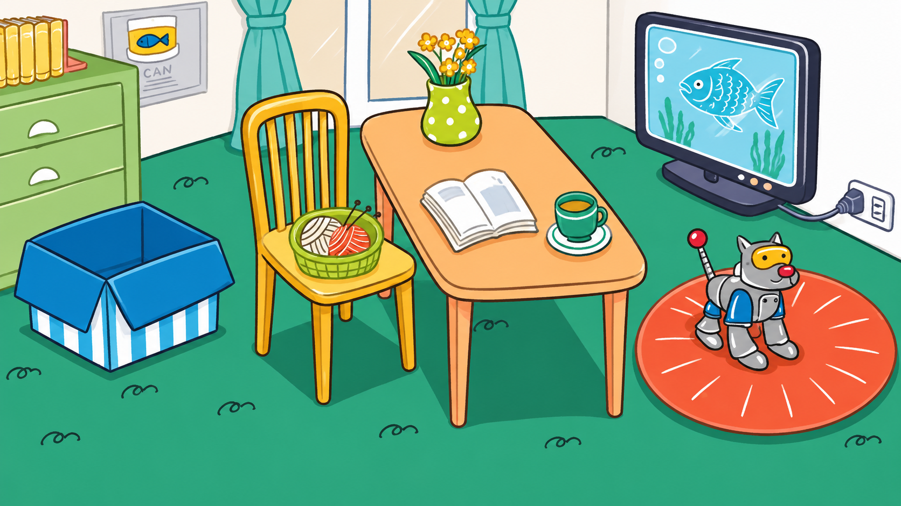
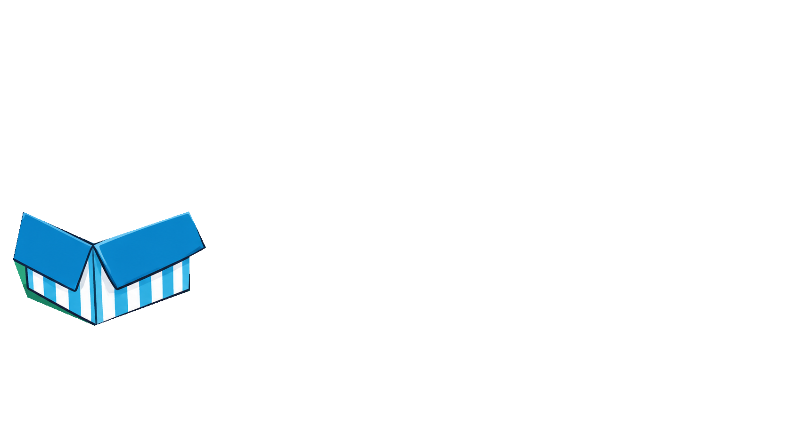
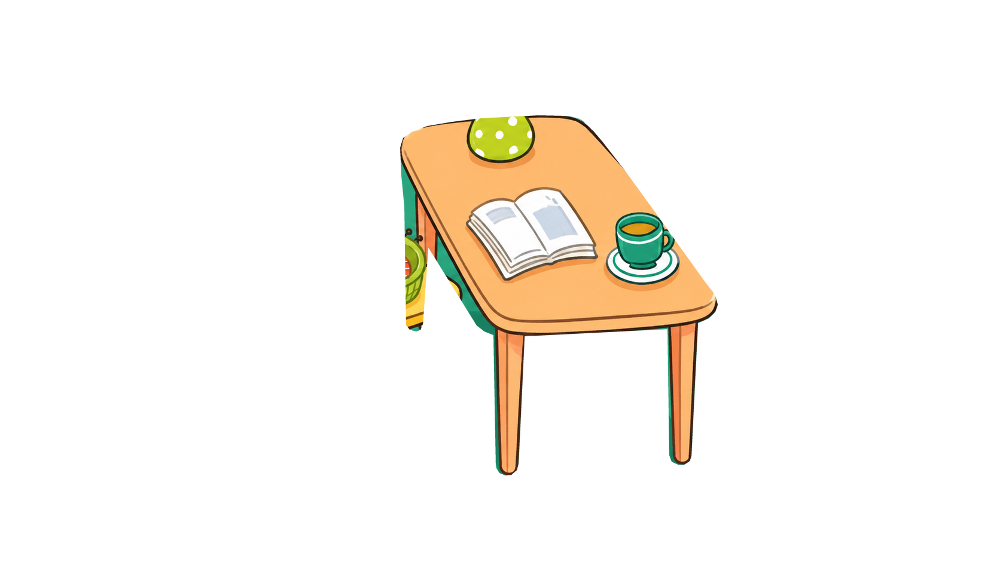
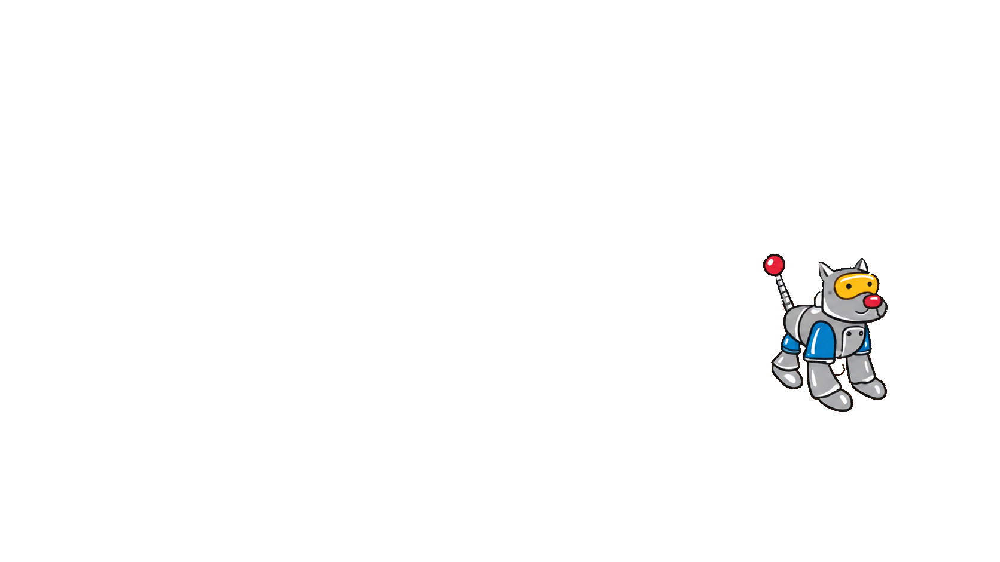

康軒 B1L3 · 位置介系詞
Where Are the Cats?
QUESTION 01
Lucy is in the box.
英文題目會唸兩遍，中間間隔 1 秒。
本題 00:00總計 00:00尚未開始
把貓咪拖到句子描述的位置。




點選開始遊戲與英文朗讀
YOUR CATS拖曳貓咪到房間
也可先點貓咪，再點位置
也可先點貓咪，再點位置
鍵盤：選取貓咪後，以方向鍵移動位置，Enter 放下，Esc 取消。答對的貓咪會留在房間。
ALL 6 QUESTIONS COMPLETE
You found all the cats!
七隻貓咪都找到正確的位置了！
圖片無法載入。請確認 assets/images 資料夾完整，並重新開啟 index.html。
音效來源
答對貓叫：Sadiquecat / Freesound，CC0，已調整音量。掌聲與歡呼：Zeraora / Freesound，CC0。背景音樂為本遊戲原創。